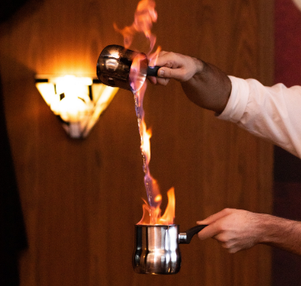
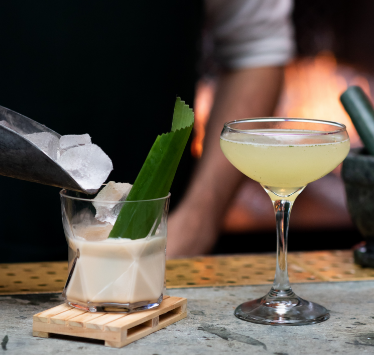

Magma Stills came into being three generations ago, thanks to a group of three mates who set up their first-ever distillation setup close to a geothermal vent nestled in the volcanic region of Auckland Harbour. After noticing that the special geothermal heat lent their Gin a remarkable and captivating flavor, the enterprising trio realized they had stumbled upon something rare and valuable. Driven by the desire to share their exceptional spirits with everyone, they launched the renowned Magma Stills brand.
Today, their grandsons carry on the tradition, blending modern techniques with the tried and true recipes that made their ancestors famous. From the selection of premium ingredients to the meticulous aging process, no detail is overlooked in their pursuit of the perfect spirit. But they also understand the importance of innovation and staying ahead of the curve in the competitive world of distilling. So while they honor their roots, they continue to explore new techniques and flavors, always searching for the next big thing in spirits.
Magma Stills takes pride in hand crafting some of the world's finest gin and spirits, which have recently been recognized by top industry experts. Our award-winning products include a gold medal at the 2023 World Gin Awards, first place in both the 2023 Whiskey Magazine and 2022 Gin Magazine, as well as a gold medal at the 2022 Australian Gin Awards. We invite you to try our exceptional spirits and experience the craftsmanship that goes into each and every bottle.
As a company, we are committed to supporting the important work of 350 Aotearoa in their mission to advocate for a shift towards renewable energy and to end all oil, coal, and gas projects in New Zealand. To demonstrate our support, we donate a portion of every sale made through our online site to Aotearoa 350. It's our small contribution to help promote a sustainable future and create a just transition towards cleaner energy sources.